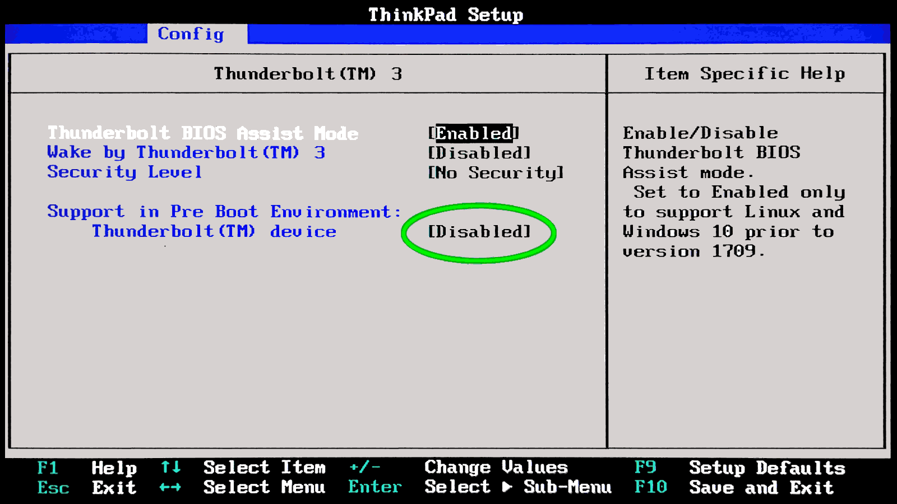
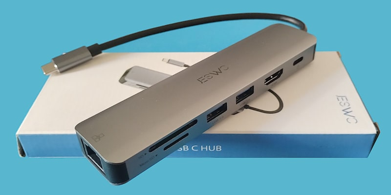

ThinkPad X390 BIOS USB-C full bandwidth
Published initially on LinkedIn and on Facebook on 1st March 2025, then updated and collected here.I have noticed a drastic drop in performance on my X390 USB-C Thunderbolt port when I have enabled that system in full and in particular the option which is marked with a green circle. I do not want to convince anyone that disabling that option can 2x increase the performance on that port. Just give it a try, and judge by yourself on Ubuntu 22.04 with 6.08 kernel and Netac US9 512GB as USB 3.2 drive. This is the Grok3 explanation about my experience and it is totally coherent with what I have seen on my own and in my case. Which confirms my feeling that it is better keep the Thunderbolt disabled as long as it is not used (changing that settings requires 15s for the BIOS and a reboot).
ⓘ
Why It Affects USB Performance
Your Netac US9 is a USB 3.2 drive (likely Gen 2, 10 Gbps), not a Thunderbolt device, but it’s using the X390’s USB-C Thunderbolt 3 port. Here’s how enabling pre-boot Thunderbolt activation could throttle it.Prioritization of Thunderbolt Protocol
When enabled, the BIOS might configure the Thunderbolt controller to assume a Thunderbolt device is attached, prioritizing PCIe tunneling or Thunderbolt signaling over USB SuperSpeed. USB-C ports multiplex USB and Thunderbolt over the same pins/lanes. If Thunderbolt gets precedence, the USB SuperSpeed pairs (SSRX/SSRX+ and SSTX/SSTX+) might not negotiate at their full potential, capping the port at USB 3.0 (5 Gbps) instead of USB 3.2 Gen 2 (10 Gbps).Lane Misconfiguration
Thunderbolt 3 uses up to 4 PCIe lanes, dynamically allocated with USB and DisplayPort. Pre-boot activation might reserve or misalign these lanes, leaving fewer or slower paths for USB data. Your 300-500 MB/s matches USB 3.0’s real-world limit (400-500 MB/s with overhead), suggesting it’s stuck at 5 Gbps instead of 10 Gbps (800-1000 MB/s in real-world).Latency or Overhead
Enabling pre-boot Thunderbolt could introduce controller polling or initialization delays, adding latency to USB transfers. This might not drop the theoretical speed but could reduce effective throughput, especially on a non-Thunderbolt device like your Netac.Negotiation Downgrade:
The kernel (xhci_hcd) relies on the hardware’s initial state. If the BIOS hands over a port pre-configured for Thunderbolt, USB 3.2 negotiation might fail or downgrade to USB 3.0 (Gen 1), as seen in your ~300-500 MB/s range.Thunderbolt firmware upgrade
After Ubuntu proposed to me the Thunderbolt firmware upgrade 20.00 → 23.00, and I accepted it, I did not manage to go above 560Mb/s while - before the upgrade - I hit the 900MB/s and a little above. Check in the comments the screenshot about the firmware upgrade. While moving on lowlatency kernel, the system did something better but still did not see the top v20.00 Thunderbolt Firmware performance.
# variables
f=/tmp/usbkey.tst
d=/dev/sda
n=10
# test 10 or 100 tries
umount $d* 2>/dev/null; for i in $(seq $n); do
dd if=$d bs=1M count=256 skip=$[RANDOM%256] of=/dev/null 2>&1 |\
grep bytes; done | tee $f
# maths
str=$(cat $f | cut -d, -f4 | sort -n)
min=$(echo "$str" | head -n1); max=$(echo "$str" | tail -n1)
let sum=$(sed -ne "s/.* s, \([0-9]*\) .*/\\1+/p" $f | tr -d '\n')0
if [ $sum -eq 0 ]; then
let sum=$(sed -ne "s/.* s, \([0-9.,]*\) .*/\\1+/p" $f | tr -d '\n',.)0
let n*=10; fi; avg=$[sum/n].$[sum%n]
# results
printf "\n min:%s, avg: %s MB/s, max:%s \n\n" "$min" $avg "$max"
Results print out & comments
Because the direct access to the device is not cached
ThinkPad X390 tweaks
All the changes presented here requires the root permission.1. snpd warning in dmesg
In case you Linux kernel dmeg log reports a problem with snapd configuration you can apply this change:
# with systemd v254+, skip going through failed state during restart
#RestartMode=direct
#Restart=always
Restart=on-failure
RestartSec=5s
2. i915 granted in initramfs
This is optional and might create troubles, apply only if necessary:
echo "
drm_kms_helper
drm_fb_helper
i915" >> /etc/initramfs-tools/modules
echo blacklist elan_i2c >> /etc/modprobe.d/blacklist.conf
echo blacklist thunderbolt >> /etc/modprobe.d/blacklist.conf
update-initramfs -u # -k all # only after giving a test
3. non-US keyboard mapping
kbd.map=it # choose your keyboard layout
update-grub
4. avoid logo shown at boot
bgrt_disable=1
update-grub
An useful USB-C hub
Ask me why I am so happy with little gadget...

right click menu to (2x) enlarge the image
I will tell you what I do not like about it - the HDMI - is a duplication for my Thinkpad X390 or X280 and I wish I had found the version with a USB-C port, instead. Cheaper and more useful for me. However, I understand that a lot of people out there that have not yet joined the Cult (of having a Thinkpad as their laptop) desperately need a HDMI port and this adapter provides it to them.
The 2x USB 3.0 ports are valuable but they seem to work at 5 Gbits each. If they can sustain that speed simultaneously, then it starts to be reasonable.
right click menu to (2x) enlarge the image
Share alike
© 2025, Roberto A. Foglietta <roberto.foglietta@gmail.com>, CC BY-NC-ND 4.0